| |
|
Quake
II Capture the Flag User Manual
Table
Of Contents
This document
Copyright ©1998 by id Software.
|
Introduction
Quake II Capture The Flag (Q2CTF)
is a multiplayer addon for Quake2 that features a simple
set of rules for team based play. It features five unique
maps and special powerups to enhance and make the
gameplay more exciting.
Q2CTF requires the full retail
version of Quake II installed in order to play. Once
installed, you simple need to connect to a Quake2 game
server that is running the Q2CTF addon.
Rules of the Game
Capture the Flag is a multiplayer
addon for Quake2 that features a simple set of rules for
team based play.
The basic rules are:
- When connecting to the server,
you join one of two teams: the Red team and the
Blue team
- Each team has a base with a
flag positioned in it.
- The object of the game is to
infiltrate the enemy base, take their flag and
bring it back to your base.
- In order to successfully
complete a capture, you must be carrying the
enemy flag and touch your flag while carrying it
at your base.
When playing Q2CTF, there are
several different indicators on your Heads Up Display
(HUD) that show the status of the game. Learning to
interpret the information on this display is important in
learning how to play Q2CTF.
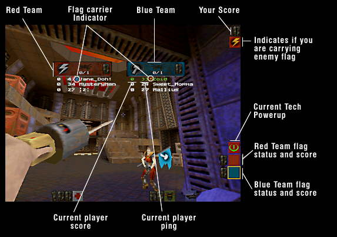
Joining a game
When you connect to a Q2CTF server,
you may be presented with the option as to which team you
join. You'll be present with a menu.
| 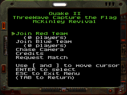 |
This menu offers
you the ability to join either the Red and Blue
teams, select a chase camera (watch other players
as they play), see the credits for the Q2CTF
addon or Request that the server switch to Match
Mode. Navigating
the menu assumes that you haven't change the
default keys in Quake2. The following keys are
used when navigating the menu:
- <]> is
used to move to the next menu selection
- <[> is
used to move to the previous menu
selection
- <ENTER>
is used to make a menu selection
- <ESC>
will remove the menu (in this case,
you'll be left in an "observer"
mode and can freely move around the map,
but you can not interact with the game)
- <TAB>
will recall the menu if you've cleared
it.
|
Note that if you
have change any of the key binds for those keys, the menu
may not work properly. The default bindings for these
keys are (from Quake2's default.cfg):
bind TAB inven
bind ENTER invuse
bind [ invprev
bind ] invnext
bind ESCAPE togglemenu
If you have changed those keys, you
will have to duplicate those bindings for other keys. For
example, if you wanted the up and down arrows to navigate
the menu, you could bind it like so:
bind UPARROW invprev
bind DOWNARROW invnext
- Join Red Team
- This joins you to the Red team
and places you into the game starting at the Red
base. You are immediately ready to go and start
playing.
-
- Join Blue Team
- This joins you to the Blue
team and places you into the game starting at the
Blue base. You are immediately ready to go and
start playing.
-
- Chase Camera
- This activates a chase camera
and lets you watch players as they play. The
camera will automatically be placed behind
someone as they are playing. If you wish to
change the camera to follow someone else, use the
<[> and <]> keys to change the player
you are trailing (same keys as the menu
selection). To get out of Chase Camera mode, hit
<TAB> to bring up the menu again and select
"Leave Chase Camera."
-
- Credits
- This shows a simple screen
showing the development credits for the Q2CTF
Addon.
-
- Request Match
- If the server has match
capability, this will begin an election that
players may vote on in order to switch the server
to match (competition mode).
-
Using the grapple
One of the exciting features of the
Q2CTF is a new weapon/tool called the Grapple. The
grapple lets you get to parts of the level that were
previously inaccessible and can be used as a great tool
to increase your mobility. It can also be used as a
weapon, but it only does the same damage as the blaster,
so it's not very effective.
| 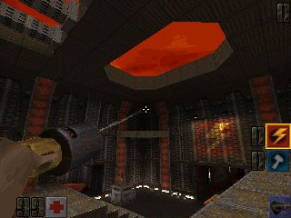 |
The grapple is a
fun addition to Q2CTF and learning how to use is
required for effective CTF play. To use the grapple, you
must bind a key or mouse action to it. For
example, to bind it to you right mouse button,
you would use:
bind MOUSE2
"use grapple"
This would cause
the grapple to be selected whenever the right
mouse button was hit.
|
You can use the
grapple in a few ways:
- Select the grapple, point it
where you want to go and press and HOLD the fire
button down. The grapple will launch and connect
to the spot you fired and once contact is made,
you will be pulled to the spot the grapple
connected. Once at your destination, let go of
the fire button to release the grapple.
- You can also hang from the
ceiling or wall with the grapple. You would go
there by performing a normal grapple maneuver,
but once you get to your destination, do not
release the fire button. Instead, while holding
down the fire button, change to a different
weapon in midair. Once the change is completed,
let go of the fire button and you'll be left
hanging from the ceiling. When you want to drop
off the ceiling, switch back to the grapple and
make sure your fire button is not held down.
You'll be released and will fall from your
position.
Special Powerups
There are four special TECH
powerups in Q2CTF.
| 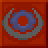 |
Disruptor Shield
This TECH
Powerup causes the holder to have a protective
shield and reduces the damage from all attackers
to half. Its an effective tool when attacking
enemy installations.
|
| |
-
|
| 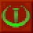 |
Power Amplifier
This TECH Powerup causes
the holder to power up all his attacks to double
the damage normally delivered. This an excellent
tool for defending your base installation.
|
| |
|
| 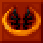 |
Time Accelerator
This TECH Powerup
accelerates weapon time for the holder. All his
weapons will operate double speed in reload time,
switching, etc. This is also an excellent tool
for defense, since the holder can deliver twice
as much damage in the same amount of time.
|
| 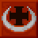 |
AutoDoc
This TECH Powerup
automatically heals and increases a players
health and armor (up to a maximum of 150 for
each). The player will slow regain health and
armor over time. This is an excellent tool for
people carrying the enemy flag since the player
will constantly regain health and armor, making
him much tougher to kill and get the flag back
from.
|
| |
|
-
-
Communicating With
Your Team
A very important part of any
multiplayer team based game is communication. Letting
your teammates know where you are and what you are doing
is an essential part of teamwork.
Q2CTF has a basic team
communication called "say_team" or
"messagemode2". It is like the regular
communication of Quake2, but you need to bind a key in
order to use it. I use the <R> key myself, since
its right beside the normal <T> key used for
communication. To bind it, use the following:
bind r
"messagemode2"
When you want to say a message to
your team, just hit <R> and type it in. This image
shows me telling what I'm doing to my team:
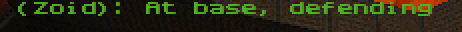
Note the parenthesis around my
name. This indicates it is a team message and only people
on your team saw it.
Now, normally I don't type a lot of
my team messages, I have several standard messages I use
to communicate with my teammates. They are bound to
several keys like so:
bind z "say_team Base
secure"
bind x "say_team Base overrun! Recover"
bind c "say_team Incoming!"
bind v "say_team I'm going offensive"
bind g "say_team Going to base"
bind b "say_team At base, defending"
So when I want to say "At
base, defending" to my teammates, I just hit my
<B> key to do so. This is much faster than typing
it out all the time.
Q2CTF also features some advanced
options for communicating to your teammates. This feature
is called "auto macros". It lets you configure
generic messages that will automatically be filled in as
necessary. Here's an example.
bind f "say_team I'm %L,
%H and %A, and have %T."
That looks kind of cryptic, but
here's what happens when I hit the F key I bound that
say_team to:
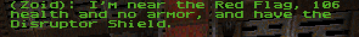
What this means is each of the %
macros in the say_team are automatically changed into
something specific to the situation. In this case, the %L
changes to a description of my current location, %H
changes to how much health I have, %A changes to indicate
how much armor I have and %T changes to indicate what
TECH Powerup I'm carrying.
Here is a table of all the
different % automacros and what they do.
Team Message Auto Macros
|
| %L |
This will be substituted
with your current location in the map. Some
common examples are:
"near the Red Flag"
"above the Red Armor"
"near the Blue Railgun" |
| |
|
| %A |
This will be substituted
with what ever armor you are current carrying.
Some common examples are:
"Power Shield with 100 cells"
"50 units of Yellow Armor"
"Power Shield with 154 cells and 108 units
of Red Armor"
"no armor" |
| |
|
| %H |
This will be substituted
with how much health you current have. Some
common examples are:
"106 health" |
| |
|
| %T |
This will be substituted
with the name of the TECH powerup you are
holding. Some common examples are:
"the Disruptor Shield"
"the Power Amplifier"
"no powerup" |
| |
|
| %W |
This is substituted with
the current weapon you are using. Some common
examples are:
"Railgun"
"Rocket Launcher"
"Grapple" |
| |
|
| %N |
This will be replaced with
a list of names of the people who are currently
in your visual range, or area. Some common
examples are:
"Zoid, Disruptor and Hellrot"
">BC>Casey and >BC>Mutha"
"no one" |
Scoring
Q2CTF features many different score
bonus based on actions that result in a flag capture,
defense of the flag and your flag carrier and other
bonuses.
Q2CTF Scoring
|
| Fragging
enemy player |
|
One point |
| |
|
|
| Fragging
emery player within your base |
|
Two points.
One Point for
the frag, one point for the base defense. |
| |
|
|
| Fragging
enemy player within sight of your flag carrier |
|
Two points.
One point for
the frag, one point for defending your flag
carrier. |
| |
|
|
| Fragging
enemy player who has hurt your flag carrier |
|
Three points.
One point for
the frag, two points for defending your flag
carrier against an aggressive enemy. |
| |
|
|
| Fragging
enemy flag carrier |
|
Three points.
One point for
the frag, two points for fragging the enemy flag
carrier. |
| |
|
|
| Returning
your flag (after enemy player has lost it) |
|
One point. |
| |
|
|
| Getting an
assist for returning the flag (occurs if your
flag carrier captures within a few seconds of you
returning your flag). |
|
One point. |
| |
|
|
| Getting an
assist for fragging the enemy flag carrier
(occurs if you flag carrier captures within a few
seconds of you fragging the enemy flag carrier) |
|
One point. |
| |
|
|
| Capturing the
enemy flag (you are the flag carrier) |
|
15 points.
Everyone else
on your team gets 10 points. |
Elections
Elections are part of the new
competition mode for Q2CTF. They also can be used for
other features by users to change maps and other options.
Elections can occur during the following situations.
- Switching from normal to match
mode
- A user may make a selection
from the menu to request that the server switch
to match mode. If this selection is chosen, an
election will begin and run for twenty seconds.
If the election is won, the server will reset
into match mode; all players will be cleared and
placed at the join menu.
- Changing map (warp)
- If a user makes a map change
request (by using the "warp <map
name>" command) an election is started.
If the election is won, the game will enter the
intermission and then automatically change to the
new map.
- Requesting to become an admin
- A user can request to become
an administrator by typing 'admin' at the
console. An election will begin and if
successful, the user will gain access to the
admin menu. From here, the new admin can change
game settings, switch to match mode and warp to
different levels.
To vote on an election, simply type
"yes" in the console. Votes are anonymous. If
enough people have voted (its server configurable, the
needed amount of votes is displayed), the election will
be won and the action requested will happen.
Competition mode
Q2CTF features a
tournament/competition mode that allows organized setup
of matches between two teams. The competition mode (once
it has been activated by an admin or by an election)
works in three stages:
- When competition mode is
activated, the game enters the setup phase. This
where the players pick their teams, discuss
strategies and prepare for the match. Players can
move around the level, but can't pick up any
items or damage any enemy players. If the server
isn't dedicated to match play, there is a timer
in this phase that determines how long players
have to set up their game. If they don't set it
up in the needed period of time, the server will
reset back to normal play. When the players have
established their teams, each player must enter
'ready' to commit to the game. Once everyone has
committed, the game enters phase two.
- In this phase, everyone has
committed and the game is about to begin. There
is usually a twenty second countdown before the
match actually starts. During this time, any
player may enter 'notready' at the console to
abort the countdown. After the countdown
completes, phase three begins.
- At the point the match is
begin. Everyone is respawned (sometimes with a
small two or three second delay to even out the
spawns in the bases, if everyone respawned,
telefrags and overflows could occur) in their
base and the match begins. Players are also
assigned their ghost codes which can be used to
re-enter the game in case of a undesired
disconnection.
Phase three continues until the
match is completed (the default is a twenty minute
match), after which the final scores are displayed and
the server resets back to phase one.
Ghost Codes
Ghost codes is a special code given
to every player in the game when the match starts. This
code is used to track the players statistics and other
information and is also used to allow a player to enter a
game in case he lost connection.
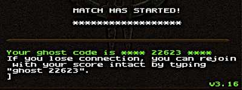
As you can see in the image above,
just after the match started I was assigned a ghost code.
If I lost connection during the match, I could reconnect
to the server while the match was in progress and type
"ghost 22632" in the console and I would be
automatically put back into the game with the same team,
score and statistics I had just before I lost my
connection.
Statistics
The CTF match code also keeps
statistics of the game in progress and keeps them around
after the match has completed. The statistics may be
accessed by typing "stats" into the console.
The look like the image below:

The statistics kept for each player
are:
- Score
How many points this player has accumulated.
- Kills
How many frags this player has made.
- Death (Deaths)
How many times this player has died.
- BasDf (Base Defenses)
How many times this player got bonus points for
defending the base
- CarDf (Carrier Defense)
How many times this player got bonus points for
defending his flag carrier
- Effcy (Efficiency)
How efficient this player is when fighting other
players. It's calculated as (kills * 100) /
(kills + deaths)
New Console Commands
The following console commands have
been added for Q2CTF.
| Q2CTF Console Commands |
| |
|
|
| Console Command and syntax |
|
Description |
| |
|
|
team {
red | blue } |
|
Switches to the team the
player indicates |
| |
|
|
id |
|
Enables HUD identification
of the player you are looking at. |
| |
|
|
yes |
|
Vote yes on an election. |
| |
|
|
no |
|
Vote no on an election
(you must just abstain). A no vote counts against
the election percentage. |
| |
|
|
ready |
|
Commit to the match in
match setup |
| |
|
|
notready |
|
Cease commitment (will
abort match countdown) |
| |
|
|
ghost
ghost-code |
|
Re-enter the game after
losing connection in a match (requires ghost code
that was provided) |
| |
|
|
admin [
password ] |
|
Request to become an admin
by election, or with password become admin
automatically if the password matches. Once one
obtains admin status, the admin command by itself
will bring up the admin menu. |
| |
|
|
stats |
|
Show the statistics of any
matches recently completed or in progress. |
| |
|
|
warp
level |
|
Warp to a new level. It
must be one of the levels listed in the warp_list
cvar (see Server Operator section). |
| |
|
|
boot
player-number |
|
Kick a player off the
server. The number of the player can be
determined with the playerlist command. |
| |
|
|
playerlist |
|
List out the player on a
server, their connect time, player number and
status (ready/notready, or admin). |
| |
|
|
observer
|
|
Leave the current game and
become and observer (this resets your score to
zero). |
User admin functions
An admin has several function he
may perform. A user can become an admin by entering
"admin" at the console and starting an election
or by typing the admin password at the console with
"admin <password>" if a password is set.
The server operator can set an admin password using the
admin_password cvar.
An admin can change settings, warp
to different maps and boot players from the server. Once
you become an admin, type "admin" again at the
console to access the admin menu.
| 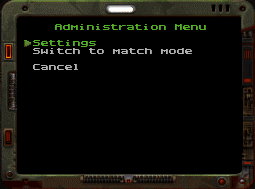 |
The admin menu
(show left) has just a couple options. Settings
allows you to change game settings (shown below)
. The second option changes depending on what
state the server is in:
- Switch to
match mode
This will switch the server from regular
play to match/competition mode.
- Force start
match
If the server is in match mode and
players are in the phase where they are
setting up their teams, the admin can
force the match to start regardless of
the ready status of the players.
- Cancel match
This will cancel the match that's
currently in progress.
|
The Settings menu has several options to allow the admin
to configure the server on the fly (some of these
settings are also applicable to normal play mode).
| 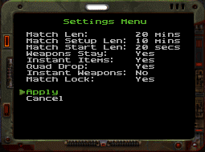 |
The menu
pictured on the left shows the different options
that an admin can change. They are: |
- Match Len
This controls the length of the match.
The default is a twenty minute match
time. This can be changed while a
match is in progress. For example, if a
match started that was twenty minutes
long and two minutes had already passed
(so there was eighteen minutes remaining)
and the admin changed the match length to
ten minutes, the remaining time would
automatically be changed to eight
minutes. If the admin sets a match time
less than the amount of time already
passed, the match will immediately end.
- Match Setup Len
This is the length of time that players
get to setup a match before the server
will reset back into normal play. This
setting can be changed on the fly like
Match Len (if a setup is in progress).
- Match Start Len
This is the length of time before the
match actually begins after everyone had
committed by typing "ready" at
the console. It should be pretty short.
- Instant Items
This is the dmflag that controls whether
powerups such as the Quad and
Invulnerability are instantly used or may
be carried and activated as desired.
- Quad Drop
This is the dmflag that controls whether
the quad is dropped when a player is
fragged while carrying it.
- Instant Weapons
This is a new option that allowed weapons
to be switched without put away and
activation animations. The weapons switch
instantly.
- Match Lock
If enabled (the default) players can not
enter a match in progress (unless the
have a ghost code). If disabled, anyone
can enter a match while it's in progress.
|
When you have made
your changes, simply select Apply to activate them.
Whatever you changed will be broadcast to everyone in the
game.
Server Operator Information
A few notes for the server
operators.
- You can change maps on a
server with two commands, "map" and
"gamemap". Both take a map as a
parameter. They differ in CTF in that when a
"map" command is used, all player teams
are reset (and players must either select or be
assigned to new teams), where as the
"gamemap" command will retain the same
teams after the map change.
The following table lists the
various Cvars that can be configured by a server
operator. You can place them in a script file with
commands like "set competition 3" and then EXEC
that config file on server startup.
Q2CTF Specific CVar variables
|
| Variable |
Default Value |
Description |
| ctf |
1 |
Enables CTF play. Normally
this should be enabled, but may be disabled to
allow deathmatch play with the Grapple and TECH
Powerups |
| ctf_forcejoin |
none |
This may be set to
"blue" or "red" to force all
people joining a server to a specific team. This
may be handy when a player who has rcon access
wants to set up teams in a specific way. |
| competition |
0 |
This variable
controls whether or not the server can be enabled
for match play. There are four legal values:
| 0 |
This value
indicates that match play is not
available on the server and can not be
enabled by players (even with voting).
|
| 1 |
When this value is
set, the server defaults to normal play
(pick up CTF games) but can be changed to
match play mode by an admin or by an
election.
|
| 2 |
This value is set
by the CTF game itself and should not be
set directly. It indicates that a server
has been voted into match play and will
revert if the match setup times out.
|
| 3 |
This indicates
that a server is in dedicated
match play. The server stays in match
mode at all times and does not time out
and return to normal play.
|
|
| matchlock |
1 |
This value controls
whether or not players can join a match in
progress (without a ghost code). Its default
value of one indicates that players can not
join a match in progress.
This variable may be changed by and admin with
the admin settings menu. |
| electpercentage |
66 |
This controls how many
people out of the players on a server have to
vote in order for an election to be one. The
default is 66% which means that two thirds of the
players must vote in order for the election to
succeed. |
| matchtime |
20 |
Specifies the length of
time, in minutes, that the match will be played
for. Twenty minutes is the default standard match
time.
This variable may be changed by and admin with
the admin settings menu. |
| matchsetuptime |
10 |
Specifics the length of
time, in minutes, that the setup phase before a
match must be started (by all players committing
by entering "ready" at the console). If
this time expires, the server will reset back
into normal play.
This variable may be changed by and admin with
the admin settings menu. |
| matchstarttime |
20 |
This specifies, in
seconds, the amount of time after a match has
been committed (by all players entering
"ready" in their consoles) and the
actual start of the match.
This variable may be changed by and admin with
the admin settings menu. |
| admin_password |
none |
This variable may be set
to a password that allows someone to grain admin
access without having to be elected. The admin
would just type "admin
<password>" to gain direct access to
the admin menu, assuming the password was
correct.
For example, "set admin_password bob"
in a start up config file for the server would
set the password to "bob" and any
player could become an admin by typing
"admin bob" at the console. |
| warp_list |
"q2ctf1 q2ctf2 q2ctf3
q2ctf4 q2ctf5" |
This variable is a space
separated list of maps that may be warped to on
the server using the warp command. Any base map
name (bsp file name) can be specified. Admins and
players who start elections for warp requests
must specific a map in this list. |
|
|
|